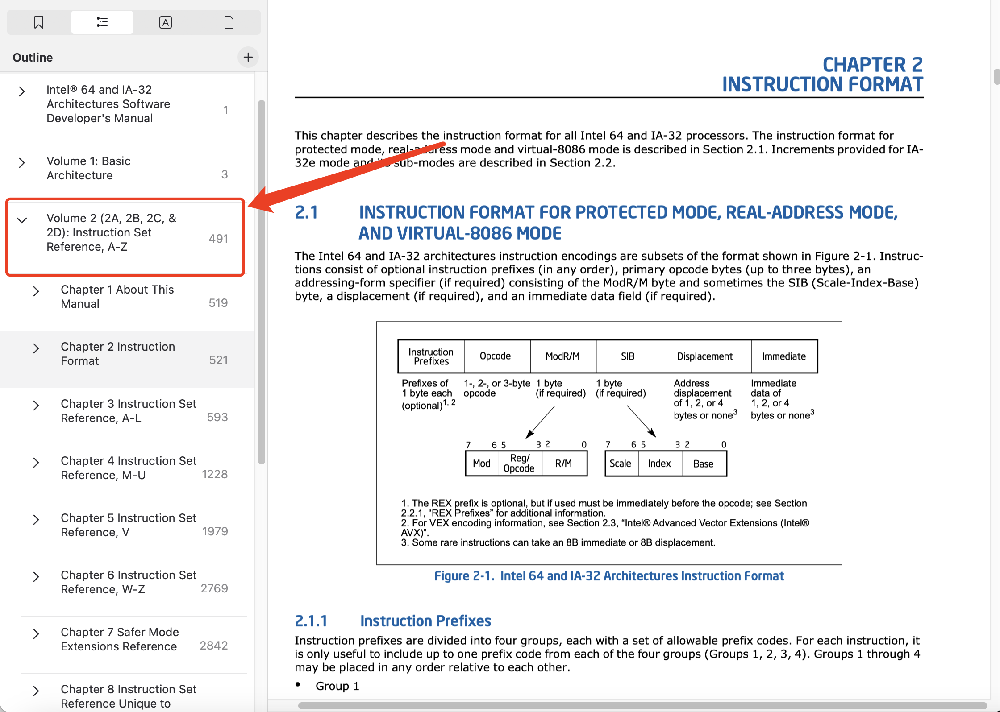
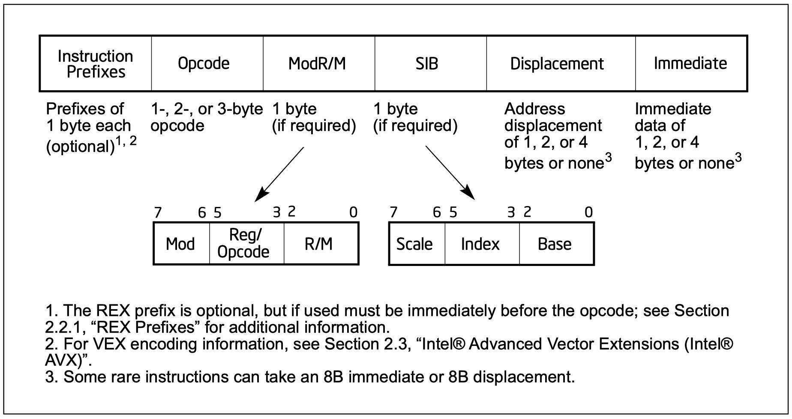
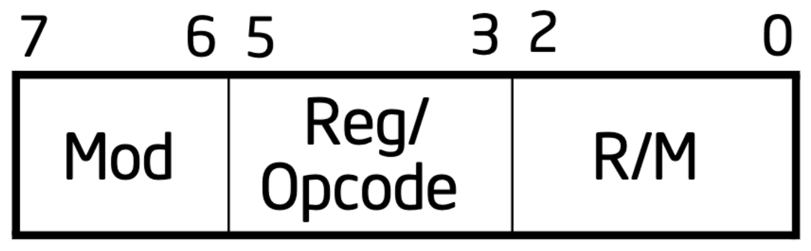
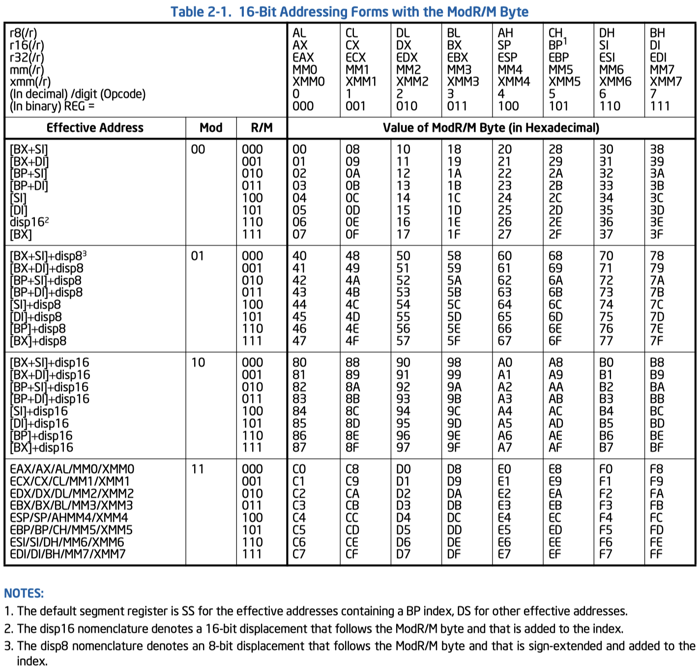
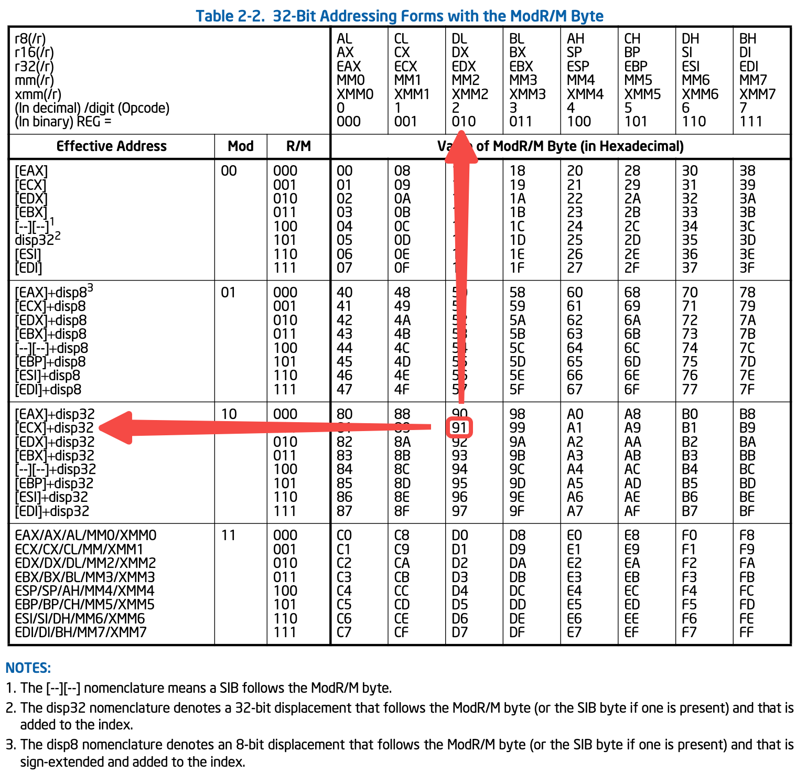
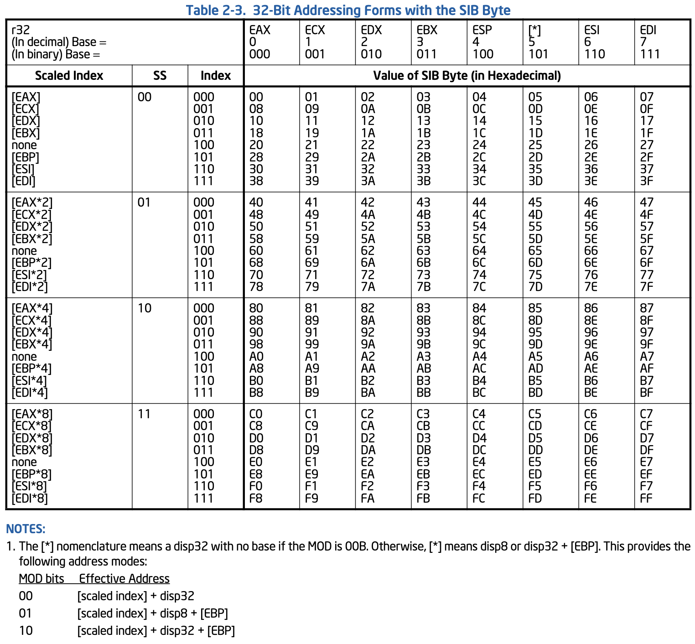
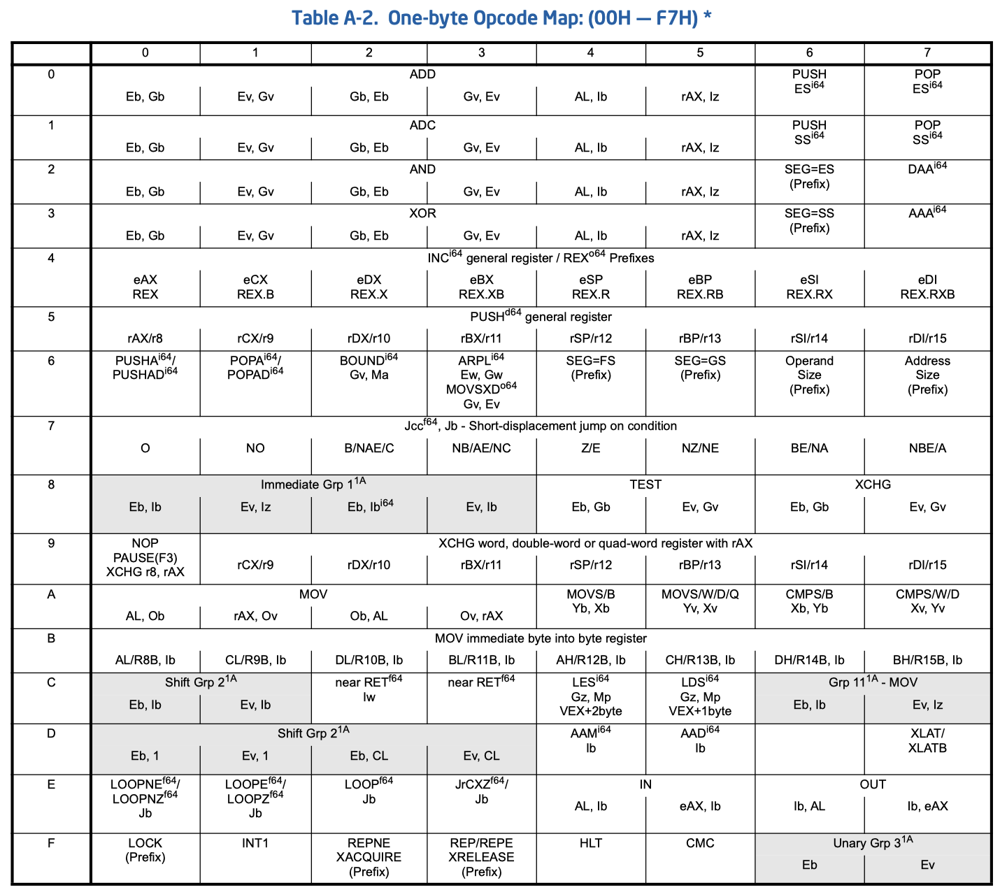
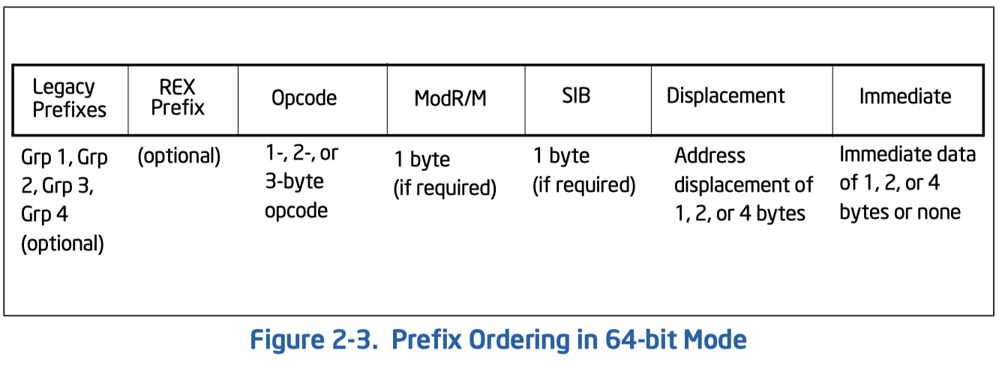
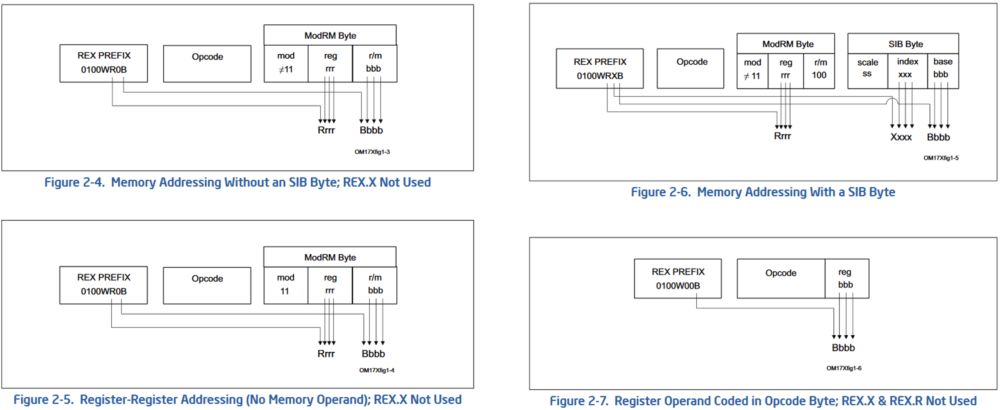

Basic (16/32-bits)
This post mainly introduces the methodology to encode/decode IA-64/IA-32 instructions, by querying Intel's manuals. Note that we are not going to discuss functionalities and performance of each instruction in this post.
Where's the Datasheet?
The Volume 2 of Intel® 64 and IA-32 Architectures Software Developer’s Manuals introduces the instruction format of Intel 64 and IA-32 Architecture.

Specifically:
- Chapter 2 provides the formatting rules of all instructions
- Chapter 3-6 provide the specific details for each instruction
- Appendix A provide the map of all OpCodes
- Appendix B provide the encoding and formats of all instructions
Overview

As shown in
$\texttt{prefix}$: Just do Some Decoration
$\texttt{prefix}$ byte could occurs in the very beginning of the instruction. According to Section 2.1.1, $\texttt{prefix}$ is divided into four groups. $\texttt{prefix}$ for different purpose has different values. The processor is able to identify these values instead of uncorrectly interprete them as $\texttt{OpCode}$ (see opcode), becaure prefixes's values are unique.
To identify whether a binary has prefix, one should check whether the first byte match one of the prefixes's value. See Section 2.1.1 in the manual for more details.
$\texttt{OpCode}$: What does the Instruction Gonna to Do?
OpCode defines what is the action of the instruction. According to Section 2.1.2, IA64/32 supports 1/2/3-bytes OpCode.
If the OpCode is 2-bytes long,
an escape opcode byte of CVTDQ2PD consists of the following sequence: $\texttt{0xF3}$, $\texttt{0x0F}$, $\texttt{0xE6}$,
where $\texttt{0xF3}$ is the prefix,
$\texttt{0x0F}$ is the
If the OpCode is 3-bytes long,
an escape opcode byte of $\texttt{0x0F}$ should also occur at the first byte position,
following by two additional opcode.
For instance,
PHADDW consists of the following sequence: $\texttt{0x66}$, $\texttt{0x0F}$, $\texttt{0x38}$, $\texttt{0x01}$,
where $\texttt{0x66}$ is the prefix,
$\texttt{0x0F}$ is the primary opcode with the escape opcode value,
$\texttt{0x38}$ and $\texttt{0x01}$ are additional opcodes.
1 $\texttt{ModR/M}$, 2 $\texttt{SIB}$ and 3 $\texttt{disp}$: Where the Instruction Operates on?
OpCode obviously isn't enough,
as the processor still need to know which register/memory to operate on.
The fields of
$\texttt{ModR/M}$

$\texttt{ModR/M}$ helps to identify the operands of an instruction.
Sepecifically,
the
Specifially, you can check the following two tables provided inside the Mannual, which show the addressing in 16-bits and 32-bits mode seperately.


The table is very convinient. You can directly know which operand the instrction is targeting at with the value of $\texttt{ModR/M}$. For instance, in the second table, the value of $\texttt{0x91}$ stands for the operand controlled by $\texttt{mod}$ and $\texttt{r/m}$ fields is $\texttt{[ECX]+disp32}$, while the operand controlled by $\texttt{Reg}$ field is $\texttt{DL}$/$\texttt{DX}$/$\texttt{EDX}$/$\texttt{MM2}$/$\texttt{XMM2}$, depending on the precision of the $\texttt{OpCode}$.
Note that if the instruction doesn't require a second operand, the field $\texttt{Reg/OpCode}$ of $\texttt{ModR/M}$ would be used as the extention of $\texttt{OpCode}$ as mentioned later (opcode_2).
$\texttt{disp}$
You might already notice the $\texttt{disp32}$ of $\texttt{[ECX]+disp32}$ in the above example. Yes, it's used for biasing the memory address. You can choose 1-byte ($\texttt{disp8}$), 2-bytes ($\texttt{disp16}$) or 4-bytes ($\texttt{disp32}$).
$\texttt{SIB}$
In 32-bits Addressing Table inside

For instance, suppose we're under 32-bits mode (see opcode_2 to see how instruction choose operand size), for $[\texttt{ModR/M},\,\texttt{SIB},\,\texttt{disp}] = [\texttt{0x74},\,\texttt{0x44},\,\texttt{0x20}]$:
- $\texttt{ModR/M}$ = $\texttt{0x74}$, so the operand controlled by $\texttt{Reg}$ is $\%\texttt{esi}$, the operand controlled by $\texttt{mod}$ and $\texttt{r/m}$ fields is from memory, but its value is still unclear.
- $\texttt{SIB}$ = $\texttt{0x44}$, so the base register is $\%\texttt{esp}$, scaled index is $\%\texttt{eax} \times 2$.
- $\texttt{disp}$ = $\texttt{0x20}$, so the bias is $\texttt{0x20}$ ($32$ bytes).
Hence, another opeand would be $\texttt{0x20}(\%\texttt{esp} \times \%\texttt{eax} \times 2)$.
$\texttt{immediate}$: Operate with Instruction Value!
Some instructions could also have a
Back to $\texttt{OpCode}$: More Encoding Details
The Appendix A of the Mannal provides detail encoding for $\texttt{OpCode}$ provided by the architecture.

For instance,
In fact, one can check the Appendix A.2.1 for answer. Turns out:
- $\texttt{E}$: A $\texttt{ModR/M}$ byte follows the $\texttt{OpCode}$ and specifies the operand. The operand is either a general-purpose register or a memory address. If it is a memory address, the address is computed from a segment register and any of the following values: a base register, an index register, a scaling factor, a displacement.
- $\texttt{G}$: The $\texttt{Reg}$ field of the $\texttt{ModR/M}$ byte selects a general register (for example, AX (000)).
- $\texttt{v}$: Word, doubleword or quadword (in 64-bit mode), depending on operand-size attribute.
Note that the Manual is in Intel syntax, so $\texttt{Ev}$ is controlling the destination operand, while $\texttt{Gv}$ is for source operand.
So basicly it just saying that:
- The destination operand (which is $\texttt{Ev}$) could be either register or memory, depending on the $\texttt{mod}$ field of $\texttt{ModR/M}$.
- Recall modrm, it's addressing with $\texttt{Reg}$ field of $\texttt{ModR/M}$.
- The source operand (which is $\texttt{Gv}$) must be a register.
- Recall modrm, it's addressing with $\texttt{R/M}$ field of $\texttt{ModR/M}$.
- Operands are in 32-bits (word) length.
Given an instruction of $\texttt{0x01}, \texttt{0xd8}$, that means:
- $\texttt{ModR/M}$ is $\texttt{0xd8}$
- $\texttt{mod}$ of $\texttt{ModR/M}$ is $\texttt{11}$, so destination operand is a register
- $\texttt{R/M}$ of $\texttt{ModR/M}$ is $\texttt{000}$, so destination operand is a $\%\texttt{eax}$
- $\texttt{Reg}$ of $\texttt{ModR/M}$ is $\texttt{011}$, so source operand is a $\%\texttt{ebx}$
So the command is $\texttt{add}\,\%\texttt{ebx},\,\%\texttt{eax}$ (
What about 64-bits?
Chapter 2.2 of the Manual describes how formating works under 64-bits.
As shown in

Specifically,

Let's travel through an example. For instance, for $\texttt{0x4e},\,\texttt{0x8d},\,\texttt{0x74},\,\texttt{0x67},\,\texttt{0x10}$:
- No legacy prefix in the instruction
-
$\texttt{0x4e}$: by quering the 1-byte $\texttt{OpCode}$ table (
one_byte_opcode ), one can know that this is a $\texttt{REX Prefix}$ byte, binary is $01001110$, so those valuable bits inside the $\texttt{REX Prefix}$ byte are: $\texttt{W}=1$, $\texttt{R}=1$, $\texttt{X}=1$, $\texttt{B}=0$ -
$\texttt{0x8d}$: by quering the 1-byte $\texttt{OpCode}$ table (
one_byte_opcode ), one can know that it's the $\texttt{OpCode}$ of $\texttt{lea}$ instruction, with $\texttt{Gv,M}$:- The destination operand is a 32-bits register (indicated by $\texttt{Gv}$), addressed by $\texttt{Reg}$ of $\texttt{ModR/M}$.
- The source operand is memory (indicated by $\texttt{M}$ $^{\star}$), addressed by $\texttt{mod}$ and $\texttt{r/m}$ of $\texttt{ModR/M}$.
-
$\texttt{0x74} = \texttt{ModR/M}$, so: (see Figure 2-6 inside
64_extend )- $\texttt{mod} = \texttt{01}$
- $\texttt{Reg} = \texttt{110}$, add the bit of $\texttt{R}=1$, it's $\texttt{1110} = \%\texttt{r14}$
- $\texttt{R/M} = \texttt{100}$
-
$\texttt{0x67} = \texttt{SIB}$, so: (see Figure 2-6 inside
64_extend )- $\texttt{Scale} = \texttt{01} = 2$
- $\texttt{Index} = \texttt{100}$, add the bit of $\texttt{X}=1$, it's $\texttt{1100} = \%\texttt{r12}$
- $\texttt{Base} = \texttt{111}$, add the bit of $\texttt{B}=0$, it's $\texttt{0111} = \%\texttt{rdi}$
- $\texttt{0x10} = \texttt{disp}$
So essentially the instruction is: $\texttt{lea}\,\texttt{0x10}(\%\texttt{rdi},\%\texttt{r12},\texttt{2}),\,\%\texttt{r14}$